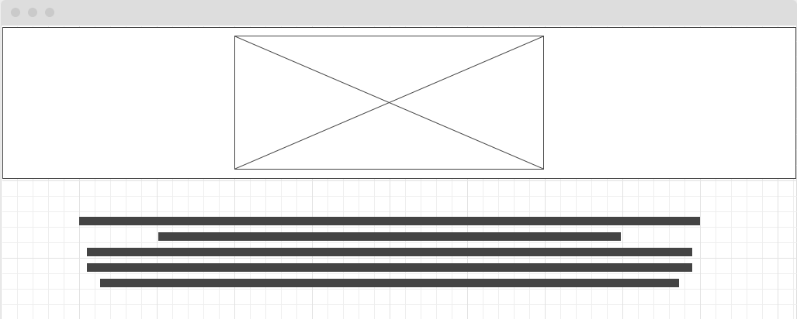
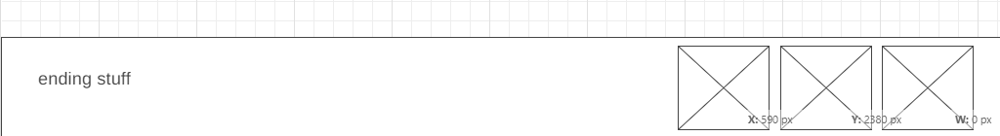
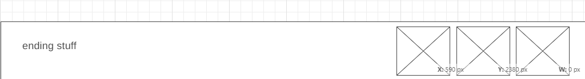

Overview
Purpose
The purpose of this website is to guide students to the avalible resources within campus as well as around Rexburg. I noticed while talking to friends and peers that not many know about the ametities offered on campus. It feels like a waste because these resources are free and open to almost every student. There are also several fun activies that occur that most students miss on because they're not aware and aren't willing to look. I wanted to create a site where it categorizes subjects for students to find things. The sections will be titled: Study, Activites, Health, and Finacial (Open to modifications). These sections will then lead to a list of links that describe their purpose and how you can use it for your desired problem. It is intended to create a quick and easy naviagtion for the resources avaible because the BYU-I website is complicated on it's own and students don't even bother.
Audience
My main audience is the students that attend BYU-I and live in Rexburg. Those who live outside of Rexburg or don't attend BYU-I are free to explore, however, some options may not be applicable to them. Because I am targeting 18-24 year olds it will be a simple site with easy to read and understand font while having an interesting layout. I want to keep the students engaged but not bored and because of the rush of college culture I will only touch on the description of links. The categorizes will be centered around students here in Rexburg. I will keep the color scheme calm and not too bold.
Branding
Website Logo
Style Guide
Color Palette
Palette URL: https://coolors.co/user/palettes/63594ec35f13cd000a41cdb9
https://coolors.co/ffda90-1b9aaa-1d3461-1f487e| Primary | Secondary | Accent 1 | Accent 2 |
|---|---|---|---|
| [#1f487e] | [#1b9aaa] | [#101d42] | [#ffda90] |
Typography
Heading Font: Archivo Black
Paragraph Font: Sans Serif
Normal paragraph example
Here at BYU-I it's difficult to find times to relax or hang with your friends. Especially if you don't have a car or family to show you around. It feels as if nothing happens around Rexburg, it's literally a desert! However, if you look carefully you'll find several activites to explore.
Colored paragraph example
Having a hard time finding a comfortable and quiet place to study? Need a room for a group project and no ones apartment is clean? BYU-I has prepared for that! This link will take you to a reservation site where you can book rooms right on campus for you to use for free! It's comforatble and easy to book and provides you will ample charing ports because we all know that's an issue with studying on campus.
Navigation
Site Map
Wireframes
Home
https://wireframe.cc/ExETeoe 
 

Category Page template
https://wireframe.cc/B2U8Mh